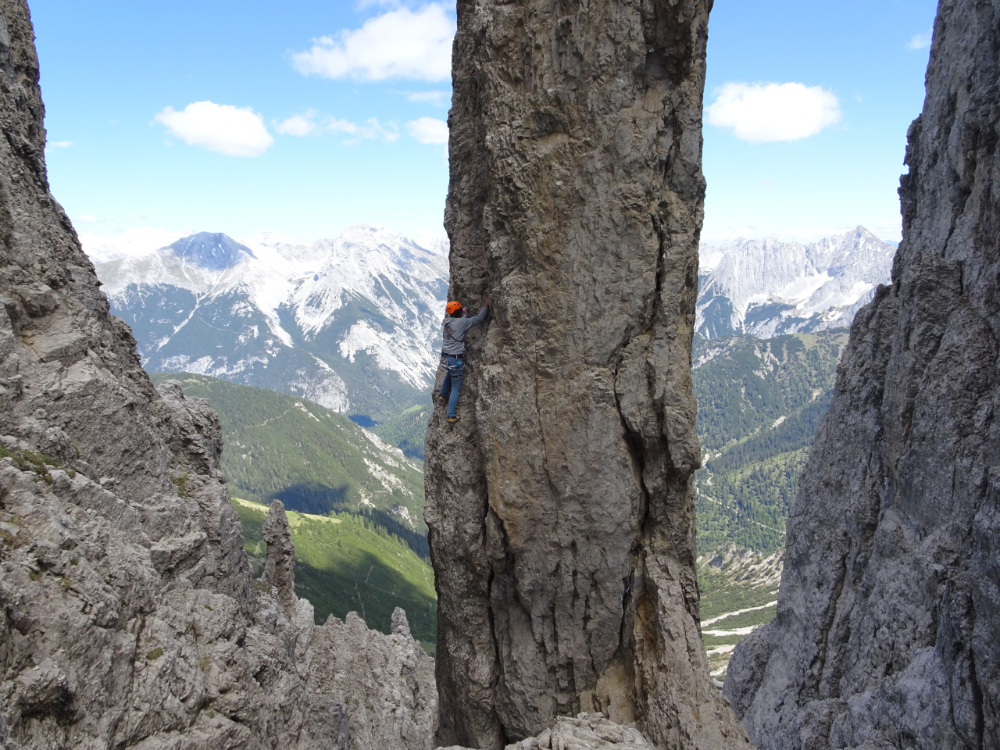

Die Gipfelstürmernadel oder auch Erlnadel ist eine etwa 2360 m ü. A. hohe Felsnadel im
Karwendel
in der
Erlspitzgruppe knapp östlich der Erlspitze. Die sehr schlanke Felsnadel aus Dolomitgestein steht in
einer Schlucht und ist an ihrer Südwestkante knapp 40 Meter hoch, an ihrer Nordostseite aber deutlich
höher.
Zustieg
Erreichbar ist die Nadel vom Normalweg auf die Erlspitze und durch einen etwa 60 bis 70 Meter langen
Abstieg in der steilen Schlucht.
Touren

Kletterer in der Westwand der Gipfelstürmernadel ( Johanna
Mascher)
Westwand (V.)
Südkante (VI.)
Ostwand Schiendl/Jeitler
Nordkante Buhl/Schiendl
Der leichteste Anstieg auf den Gipfel über die Westwand erfordert
zumindest Kletterei im V. Grad der UIAA-Skala, das ist auch der Weg der Erstbegeher. 1947 eröffnete
Hermann Buhl die Route über die Südkante im VI. Grad. Daneben gibt es an der Ostwand noch die
Schiendl/Jeitler und an der fast 100 Meter hohen Nordkante die Buhl/Schiendl.Benannt ist die
Gipfelstürmernadel nach der Alpinen Gesellschaft Gipfelstürmer, einer eigenständigen Hochgebirgsgruppe
des Alpenvereins Innsbruck. Am Gipfel befindet sich eine Flagge aus Metall.
Quelle: Wikipedia